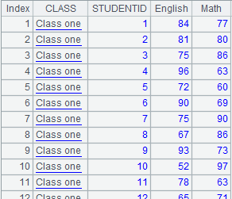
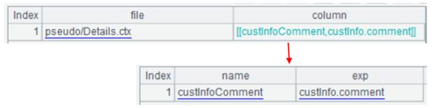
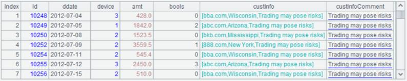
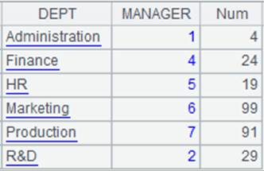
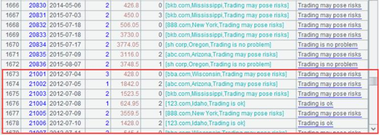

Description：
Perform a cross join on multiple record sequences.
Syntax：
xjoin(Ai:Fi,xi;…)
Note：
Perform cross join on sequences Ai unconditionally to create a new table sequence composed of Fi,… fields. Each Fi references a member of the corresponding original sequence Ai. The operation will filter members of Ai according to the criterion xi if it is supplied..
Parameter：
|
Fi |
Field names of the result table sequence |
|
Ai |
The sequences on which cross join is to be performed |
|
xi |
Filtering expression |
Option:
|
@1 |
Perform left join (Note: here is the number 1). Use null to participate in the cross join if there is no matching members in sequence Ai |
Return value：
A table sequence, each member of which references a member of every original record sequence.
Example：
|
|
A |
|
||
|
1 |
=create(Year).record([2000,2001]) |
|
||
|
2 |
=create(QuarterID, QuarterNmae). record([1,"one",2,"two",3,"three",4,"four"]) |
|
||
|
3 |
=xjoin(A1:Year;A2:Quarter) |
Perform the cross join directly |
||
|
4 |
=create(Month).record(to(12)) |
|
||
|
5 |
=xjoin(A2:Quarter;A4:Month,Month>(Quarter.QuarterID-1)*3 && Month<=Quarter. QuarterID*3) |
Dynamically compute the filtering
expression by cross join. The computation with the current field can
refer to the current value of the previous field. |
||
|
6 |
=create(Year).record([2000,2001]) |
 |
||
|
7 |
=create(ID,Value).record([2001,"one",2002,"two",2003,"three",2004,"four"]) |
 |
||
|
8 |
=xjoin(A6:f1;A7:f2,f1.Year==ID) |
 |
||
|
9 |
=xjoin@1(A6:f1;A7:f2,f1.Year==ID) |
Perform left-join-type cross join according to the given filtering condition; use null if there isn’t members to match  |
||
|
10 |
=join(A5:Employee;A6:Familymembers) |
|
||
|
11 |
=xjoin(A1:Year1;A2:Quarter1) |
|
||
|
12 |
=xjoin(A3:Year2;A11:Quarter2) |
|


Note：
Difference between join() and xjoin():
join() joins the sequences Ai according to the criterion that the value of related field/relational expression xi is equal to x1, so as to create a table sequence that has Fi,… as its fields. In this occasion, xi is the related field or the relational expression.
xjoin() cross joins the sequences Ai unconditionally to create a table sequence that has Fi,… as its fields. It will remove records that cannot satisfy criterion xi from each sequence of Ai according to the filtering criterion xi.
Related function：